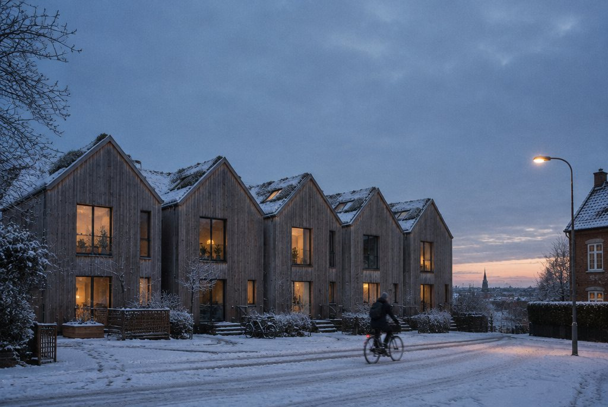
Concept render · draftFive tall houses on an old garage yard,built for a family co-op that wanteda lane instead of a car park.
The brief was short: room for three generations, gardens that get the sun, and nothing that needs painting. Every decision on this page follows from the latitude. In Aarhus the December sun gets only 10° above the horizon at noon, so the houses are tall and narrow, the glass is on the south gable, and the eaves are cut to let the winter sun all the way into the back of the kitchen.
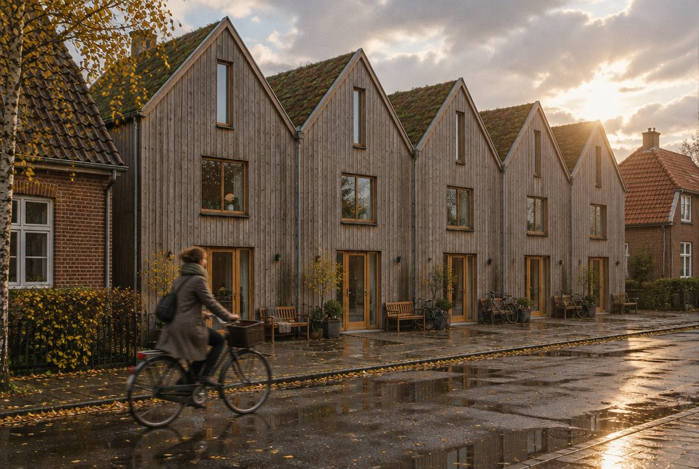
Concept render · draftThe plot was 34 metres of tarmac and 22 lock-up garages, with brick villas on three sides. Their gardens all face south, so ours had to as well, or we would have built five houses that look at the backs of everyone else.
We turned the houses so the street is on the north and the gardens are on the south. The lane between the street and the front doors is gravel, 4.2 metres wide, and nobody parks on it. Cars stay on the street and the bikes go in a timber barn at the end.
We kept the old birches on the corner. The two that were in the way of house five decided its width: it is 40 cm narrower than the others.
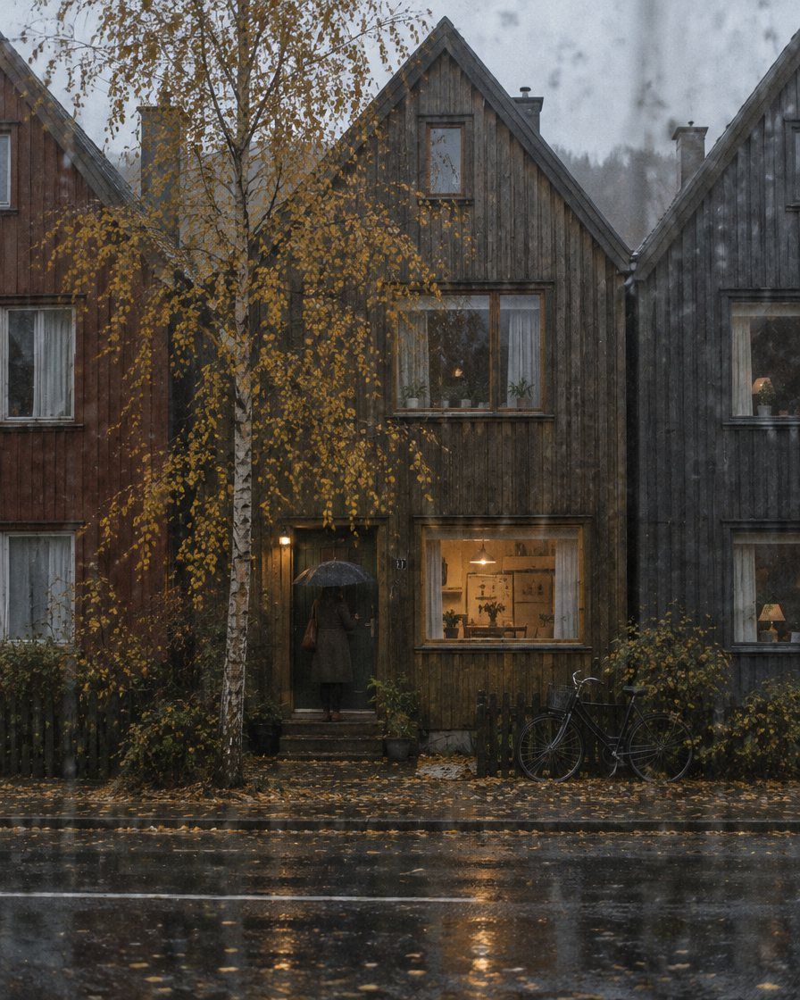
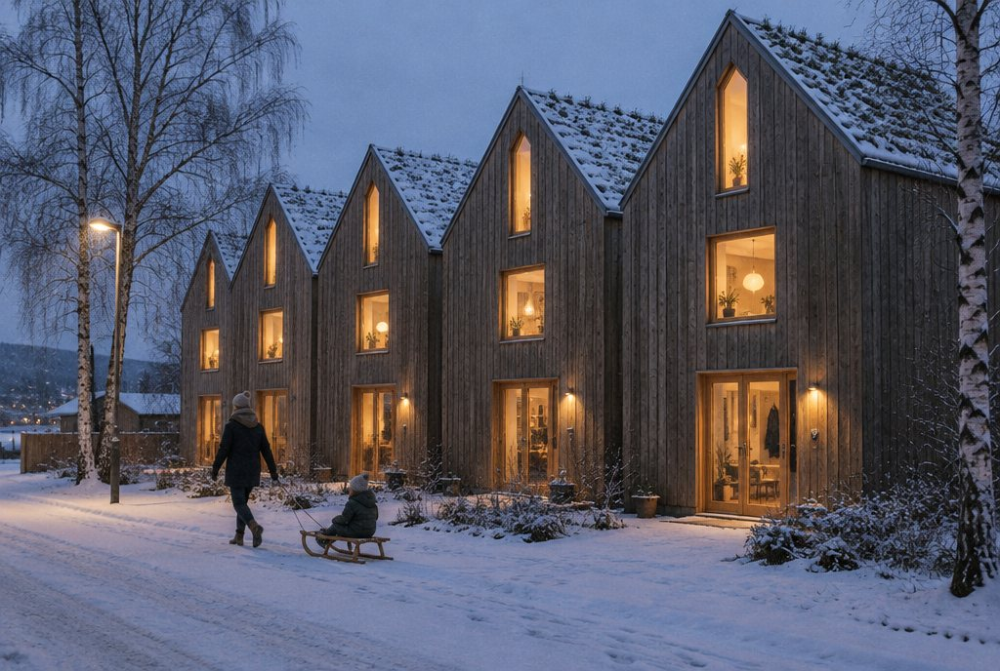
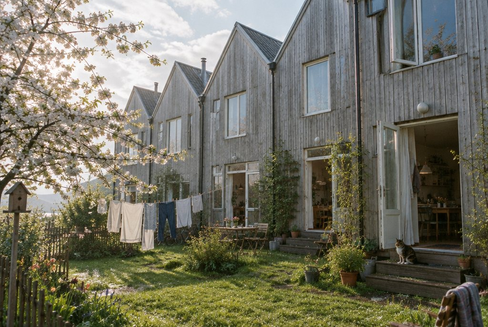
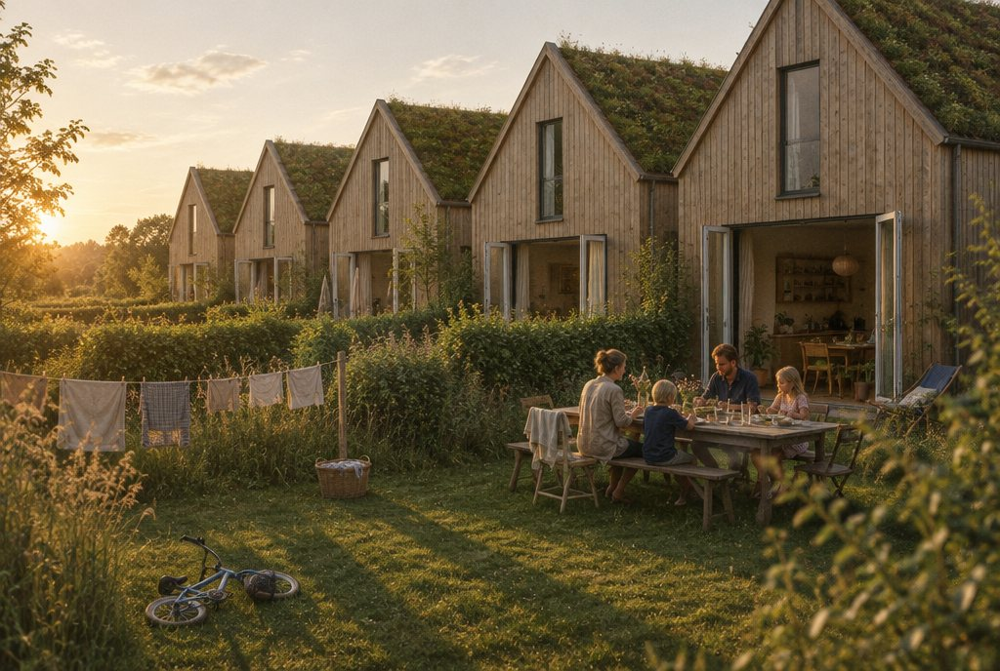
Concept render · draftAarhus gets 680 mm of rain a year. The larch is left raw, so it greys in the first wet winter and then stays that way. Each door has a deep oak porch and a bench, so you sit down to take your boots off before you go in.
At noon in December the sun clears the villas opposite by just under a metre. The garden gables are fully glazed at ground and first floor, so for seven weeks that low light reaches the stair at the back of every house.
The roofs flower yellow in May. Each one holds about half of the year's rain and lets it go slowly into a copper chain by the door, then a stone basin, then the gardens.
In June the sun is at 57°. The eaves and the deep oak reveals shade the glass, and the garden doors fold right back. Cool air comes in low, crosses the kitchen, and leaves through the roof light above the stair.
Each house is one room wide. The stair sits in the middle so it can light the floors from the roof, and every floor has a window to the south. The front door, a WC and a boot room face the lane; everything you live in faces the garden.
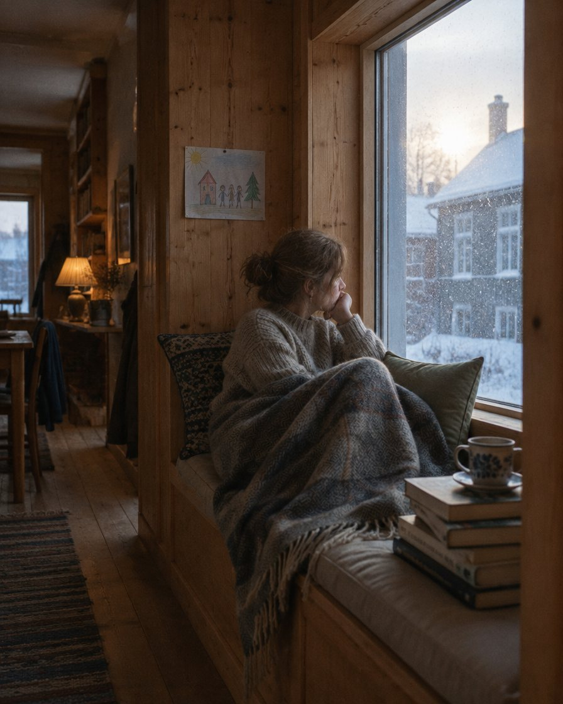
Concept render · draftThe garden window is set 60 cm deep so it can be a seat. It is the warmest place in the house in February, and the cushion lifts off a store for blankets.
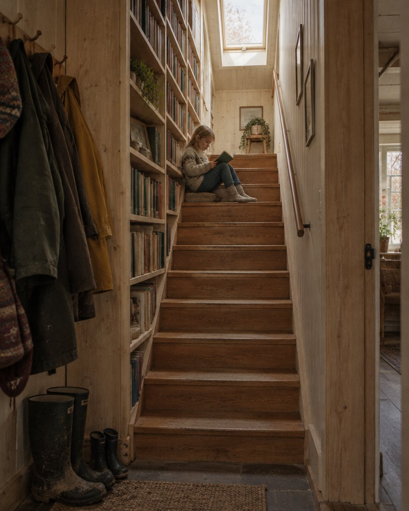
Concept render · draftThe party wall along the stair is 40 cm of shelving, which also stops the sound from next door. The oak treads are from a school gym in Randers.
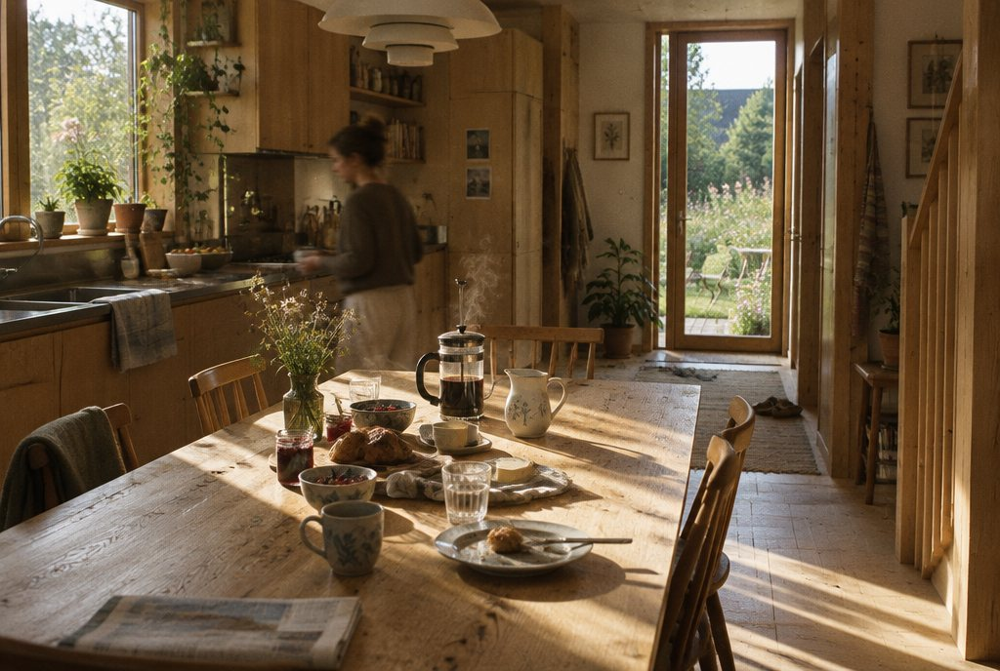
Concept render · draftThe kitchen runs the full depth of the house, so morning light comes in from the lane and evening light from the garden.
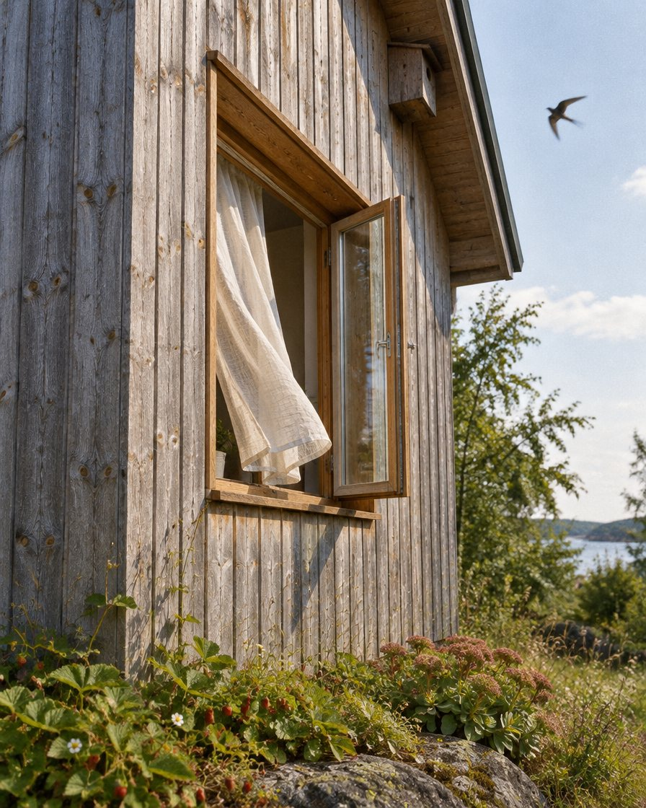
Concept render · draftEach gable has a nest box built into the cladding. The first swifts came back in the second summer.
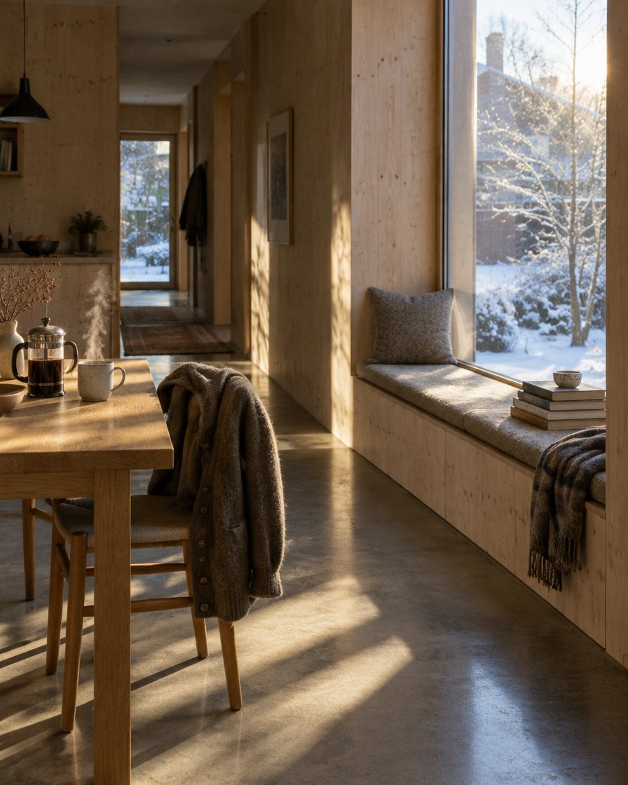
Concept render · draftOn the ground floor the bench runs from the dining table to the garden door, with drawers under it.
The garden gable is 70% glass at ground and first floor. In winter the low sun warms the concrete floor, which gives the heat back after dark. In summer the 600 mm eaves and deep reveals shade the glass, so the rooms do not overheat.
The stair is a chimney. Open the garden door and the roof light, and cool air from the garden crosses the house and leaves at the top. No ducts, and on a still summer evening the house changes its air about six times an hour.
The sedum holds about half of a year's rain. The rest runs down a copper chain by each door into a stone basin, and then into a planted ditch along the gardens. No water from the site goes into the town drains.
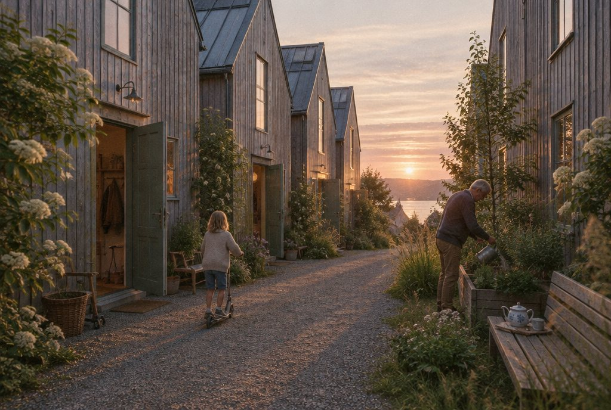
Concept render · draft22 mm boards from a forest near Silkeborg, fixed with stainless screws and left raw. Each board can come off and be turned round.
Walls and floors made in a factory in southern Sweden, numbered, and craned in over nine days.
Grown on Funen and laid on a 45° roof with timber battens to hold the soil.
A school gym floor in Randers, lifted, planed and re-laid. The court lines still show under the stairs.
Board and loose fill from northern Germany. It breathes, so the walls need no plastic layer.
The one heavy material, kept to the ground floor where the winter sun lands. It stores the heat.
Five families at one kitchen table with a map of the garage yard.
We modelled the yard for a year of sun and moved the row 3.1 metres north so the gardens clear the villas' shadow by March.
Approved after one round, with the lane kept as a public path.
186 CLT panels cut in six weeks. Every window opening was cut in the factory.
Panels craned in from the street. The five shells were weathertight in a fortnight.
The last family moved in on midsummer's eve.
kWh per m² a year, about a third of a new Danish house
kg CO₂e per m², built and delivered
None goes into the town drains
in the lane, and 23 bikes in the barn